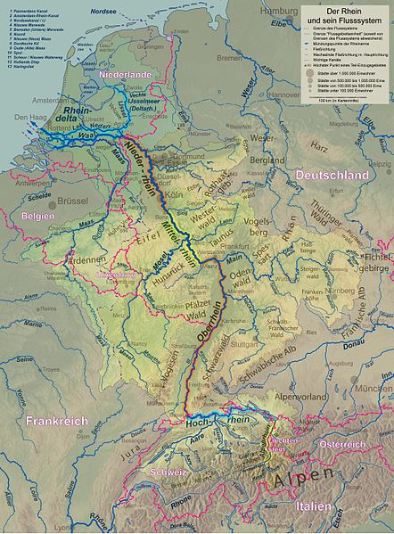
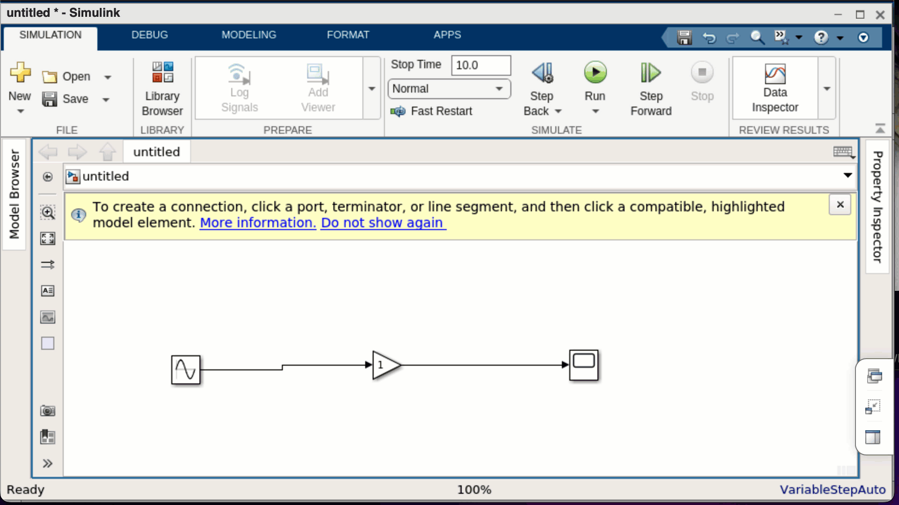
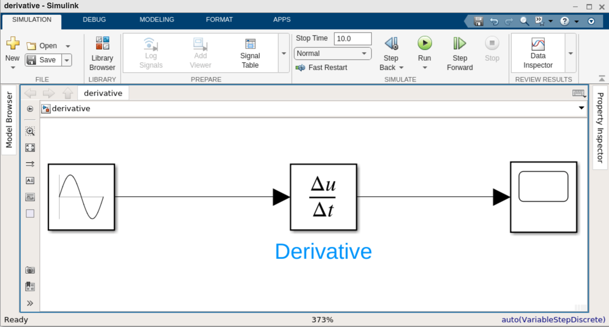
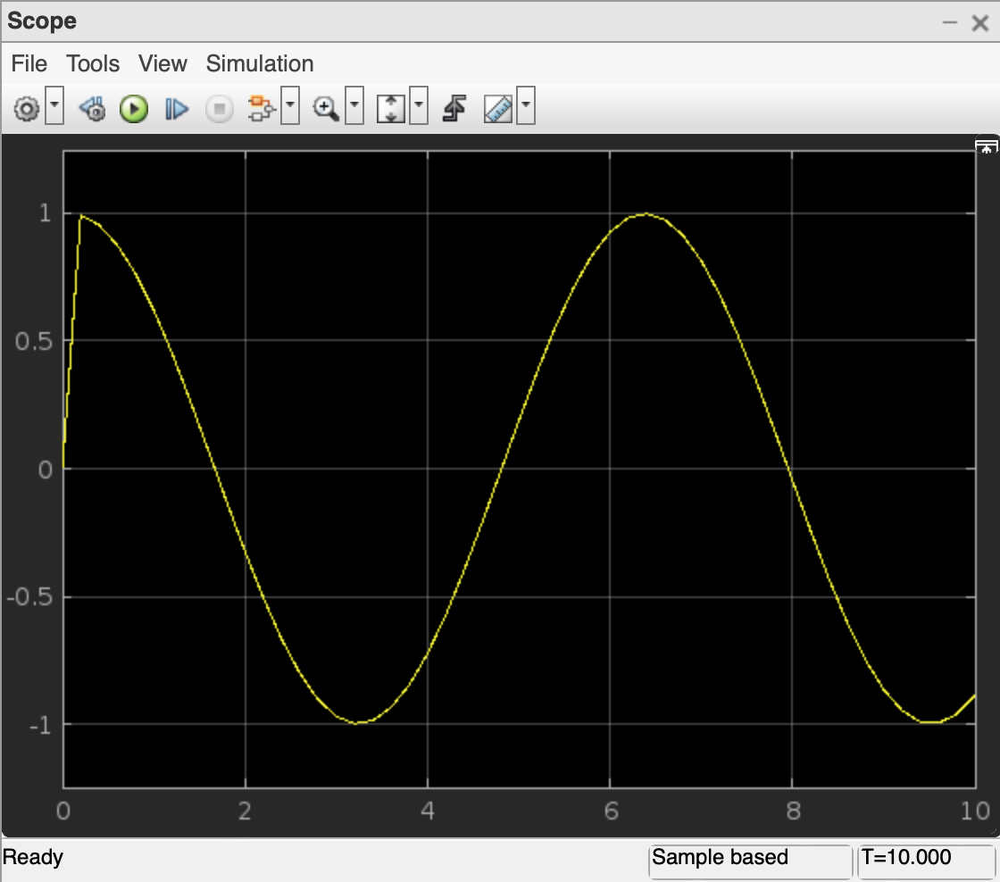

Simulink Einführung
Contents
Simulink Einführung#
Einführung und Lernziele#
MATLAB bietet neben einer Reihe von Toolboxen auch eine Zusatzsoftware an, die es Ingenieur:innen erleichtert, technische Systeme zu modellieren. Diese Software heißt Simulink und benötigt MATLAB. Detaillierte Informationen zu Simulink finden Sie auf der Produktseite von MATLAB. Die Besonderheit von Simulink ist, dass die Modellierung grafisch mit Blöcken erfolgt.
In diesem Kapitel werden wir uns zunächst mit der Modellierung technischer Systeme beschäftigen und uns dann die ersten grundlegenden Schritte in Simulink erarbeiten.
Was ist Modellierung?#
Das erste Modell, das Sie vermutlich hatten, war eine Modelleisenbahn oder eine Playmobil-Spiellandschaft – vielleicht haben Sie aber auch aus Legosteinen ein Auto gebaut? Ein Modell beschreibt die reale Welt in vereinfachter und meist verkleinerter Form. In den Natur- und Ingenieurwissenschaften sind Modelle die Grundlage des wissenschaftlichen Arbeitens.
Modellierung beschreibt nun den Prozess, ein geeignetes Modell zu finden, um eine bestimmte Fragestellung zu beantworten. Normalerweise ist kein Modell so komplex wie die Wirklichkeit. Die Modellierer:innen müssen sich also entscheiden, welche Details wichtig sind und welche sie weglassen können. Beispielsweise werden sehr häufig bei Spielzeugfiguren die einzelnen Finger weggelassen. Aber auch bei Experimenten müssen solche Entscheidungen getroffen werden. Einmal angenommen, ich möchte wissen, wie lange ich mein Eis in die Sonne legen kann, bevor es komplett geschmolzen ist. Dann kann ich die Sonneneinstrahlung oder die Temperatur messen, verschiedene Eissorten nehmen und die Zeitdauer messen, bis wann das Eis geschmolzen ist. Aber es ist nicht sinnvoll zusätzlich die Information zu erheben, wie viele Eisbären am Nordpol gerade einen Fisch gefangen haben.
In den Ingenieurwissenschaften versuchen die Forscher:innen dann aus den Daten oder den vermuteten Zusammenhängen eine Funktion zu basteln, die hilft die Zusammenhänge zu verstehen oder Prognosen zu treffen. Wenn diese Modellierung rein datenbasiert erfolgt, so benutzen wir Methoden der Statistik oder des maschinellen Lernens. Wenn stattdessen oder zusätzlich prinzipielle Zusammenhänge einfließen, verwenden wir Gleichungen oder Differentialgleichungen. Bei Simulink legen wir den Schwerpunkt der Modellierung auf die Differentialgleichungen.
Start von Simulink#
Da Simulink ein Zusatzprogramm von MATLAB ist, öffnen Sie zuerst MATLAB. Es kann
sein, dass Sie Simulink erst nachinstallieren müssen. Wenn Simulink installiert
ist, finden Sie im Hauptmenü von MATLAB einen Button mit Simulink. Starten Sie
Simulink, legen Sie ein Blank Model an und öffnen Sie die Bibliothek mit den
Blockdiagrammen. Die folgende Animationen zeigt Ihnen die notwendigen Schritte.

Quellen und Senken#
Als ein erstes einfaches Beispiel simulieren wir ein System, das durch die mathematische Funktion \(f(x)=2\sin(x)\) beschrieben wird. Damit betrachten wir zwar noch keine Differentialgleichung, sondern nur eine einfache Funktionsgleichung, aber können schon die wichtigsten Prinzipienin Simulink kennenlernen, nämlich die grafische Block-Modellierung. In Simulink wird jede Eingabe, jeder Verarbeitungsschritt und jede Ausgabe durch einen Block bveschrieben. Diese Blöcke können dann seriell (hintereinander) oder parallel zusammengebaut werden. Die Idee hinter den zusammengeschalteten Blöcken erinnert an einen Fluss und seine Nebenflüsse, der letztendlich ins Meer fließt wie beispielsweise der Rhein. Nur wird in Simulink nicht Wasser transportiert, sondern Informationen.

Die Quelle an Informationen wird in Simulink Source, so wie der englische Begriff. Die weiteren Informationen wie beispielsweise Anfangswerte oder Randbedingungen sind ebenfalls Quellen, also Sources und fließen wie die Nebenflüsse in den Hauptfluss. Der Abfluss, die Senke oder das Spülbecken heißen auf Englisch Sink. Unter den Sink-Blöcken finden Sie also das Ergebnis, die Ausgabe der Simulation. Wir wollen uns nun das Beispiel
in Simulink ansehen. Die Quelle/Source ist die rechte Seite, genauer gesagt die Sinusfunktion \(\sin(x)\). Die Quelle wird noch verstärkt. Verstärker heißt auf Englisch Gain, also wird noch ein Gain-Block zur Verstärkung dazgeschaltet. Am Ende mündet alles in eine Visualisierung. Der entsprechende Sink-Block Scope zeigt das Ergebnis \(f(x)\).
Die Blöcke werden in der Bibliothek gesucht. Zur leichteren Navigation dient die linke Seitenleiste der Library. Dort wird Sink oder Source ausgewählt, um den Eingabeblock Sinus oder den Ausgabeblock Scope auszuwählen. Der Verstärkerblock Gain befindet sich bei den häufig genutzten Blöcken. Am einfachsten ist es, die Blöcke anzuklicken und auf den Arbeitsplatz zu ziehen, wie in dem folgenden Screencast gezeigt wird.

Layout und Speichern#
Die genaue Anordnung der Blöcke ist nicht wichtig, da durch das Routing (Verbinden der Blöcke) die Fließrichtung definiert ist. Dennoch empfiehlt es sich, das Layout übersichtlich zu halten. Der folgende Screencast zeigt, wie die Blöcke mit der Maus verschoben werden, bis das Verbindungssignal horizontal ausgerichtet ist. Danach wird gezeigt, wie das erste Projekt unter dem Namen “firstProject” gespeichert wird.

Die erste Simulation#
Nun können wir die Simulation laufen lassen. Im folgenden Screencast werden zwei Möglichkeiten gezeigt. Zum einen wird direkt aus dem Hautmenü die Simulation gestartet. Anschließend wird durch Doppelklick auf den Scope-Block die Visualisierung eingeblendet. Zum anderen kann auch der Scope-Block zuerst geöffnet werden und von dort aus die Simulation gestartet werden. Zuletzt wird mnoch gezeigt, wie die Verdopplung des Verstärkungsfaktors von 1 auf 2 dazu führt, dass die Sinusfunktion Funktionswerte zwischen -2 und 2 annimmt.

Eingabeblöcke bzw. Sources#
In der Simulink-Dokumentation finden Sie eine Übersicht der möglichen Eingabeblöcke für Simulink. Die folgende Liste und vor allem die Beschreibungen sind von dort übernommen. Eingabeblöcke, die häufiger in der Regelungstechnik gebraucht werden, sind fett gedruckt.
Band-Limited White Noise: Dieser Block erzeugt normalverteilte Zufallszahlen (weißes Rauschen).
Chirp Signal: Dieser Block erzeugt eine Sinusfunktion, bei der die Frequenz ansteigt.
Clock: Dieser Block gibt bei jedem Simulationsschritt die aktuelle Simulationszeit aus. Dieser Block ist nützlich für andere Blöcke, die die Simulationszeit benötigen.
Constant: Diser Block erzeugt ein reelles oder komplexes konstantes Signal. Verwenden Sie diesen Block, um einen konstanten Signaleingang bereitzustellen.
Counter Free-Running: Dieser Block zählt hoch und beginnt wieder bei 0, nachdem der Wert \(2^N+1\) überschritten wurde, dabei ist \(N\) die Anzahl der Bits
Counter Limited: Dieser Block zählt hoch und beginnt wieder bei 0, nachdem ein vorher festgelegter maximaler Wert überschritten wurde
Digital Clock: Dieser Block gibt ebenfalls die Simuationszeit aus, aber nur zu bestimmten Zeiten.
Enumerated Constant: Dieser Block erzeugt eine Aufzählungskonstante.
From File: Mit diesem Block laden Sie Daten aus einer MAT-Datei in das Simulink-Modell.
From Spreadsheet: Dieser Block liest Daten aus einer Tabelle.
From Workspace: Dieser Block lädt Signaldaten aus dem MATLAB-Workspace in das Simulink-Modell.
Ground: Dieser Block erdet nicht verbundene Eingangssignale.
In Bus Element: Dieser Block ermöglicht die Auswahl von Eingaben eines externen Ports.
Inport: Inport-Blöcke verbinden Signale von außerhalb eines Systems mit dem System.
Pulse Generator: Der Impulsgeneratorblock erzeugt in regelmäßigen Abständen Rechteckimpulse.
Ramp: Der Rampenblock erzeugt ein Signal, das zu einem bestimmten Zeitpunkt und mit einem bestimmten Wert beginnt und sich mit einer bestimmten Rate ändert.
Random Number: Der Zufallszahlenblock erzeugt normalverteilte Zufallszahlen.
Repeating Sequence: Dieser Block gibt ein periodisches skalares Signal mit einer Wellenform aus, die Sie mit den Parametern Zeitwerte und Ausgangswerte festlegen.
Repeating Sequence Interpolated: Dieser Block gibt eine periodische zeitdiskrete Folge aus, die auf den Werten der Parameter “Vector of time values” und “Vector of output values” basiert.
Repeating Sequence Stair: Dieser Block gibt eine Treppenfolge aus und wiederholt sie.
Signal Builder: Mit diesem Block können Sie austauschbare Gruppen von stückweise linearen Signalquellen erstellen und in einem Modell verwenden.
Signal Editor: Dieser Block dient der Anzeige, Erstellung und Bearbeitung von austauschbaren Szenarien.
Signal Generator: Dieser Block kann eine der folgenden vier verschiedenen Wellenformen erzeugen: Sinus, Rechteck, Sägezahn und Zufallsgenerator.
Sine Wave: Dieser Block gibt eine sinusförmige Wellenform aus.
Step: Dieser Block erzeugt eine Treppenfunktion mit zwei Stufen, der zu einer spezifizierten Zeit wechselt.
Uniform Random Number: Dieser Block erzeugt gleichmäßig verteilte Zufallszahlen in einem von Ihnen festgelegtem Intervall.
Waveform Generator: Dieser Block erzeugt wellenförmige Signale.
Ausgabeblöcke oder Sinks#
Mit den folgenden Blöcken erzeugen Sie Ausgaben oder exportieren Ergebnisse. Diese Liste enststammt der Simulink-Dokumentation.
Display: Dieser Block zeigt den Wert der Eingangsdaten an.
Floating Scope and Scope Viewer: Der Simulink® Scope Viewer und der Floating Scope Block zeigen Zeitsignale abhängig von der Simulationszeit an. Der Scope Viewer und der Floating Scope-Block haben die gleiche Funktionalität wie der Scope-Block, sind aber nicht mit Signalleitungen verbunden.
Out Bus Element: Dieser Block kombiniert die Funktionalität eines Outport-Blocks und eines Bus-Creator-Blocks.
Outport: Diese Blöcke verbinden Signale aus einem System mit einem Ziel außerhalb des Systems.
Record, XY Graph: Sie können sowohl den Block Record oder den Block XY Graph verwenden, um Daten im Workspace, in einer Datei oder sowohl im Workspace als auch in einer Datei aufzuzeichnen.
Scope: Dieser Block zeigt alle Signale an, die mit ihm verbunden sind.
Stop Simulation: Dieser Block stoppt die Simulation, wenn der Eingang ungleich Null ist.
Terminator: Dieser Block wird verwendet, um Blöcke zu kappen, deren Ausgangsports nicht mit anderen Blöcken verbunden sind.
To File: Der To File-Block schreibt Eingangssignaldaten in eine MAT-Datei.T
To Workspace: Dieser Block protokolliert die an seinem Eingangsport angeschlossenen Daten im Workspace.
Verarbeitungsblöcke#
Um die Eingabesignale zu verarbeiten, gibt es ebenfalls eine lange Liste von Blöcken, siehe Simulink-Dokumentation. Ein erstes Beispiel haben wir mit dem Gain-Block schon kennengelernt, der ein Eingangssignal verstärkt und mathematisch gesehen eine multiplikativer Faktor ist. Die Liste der Verbeitungsblöcke ist zu lang, um sie hier eingehend zu behandeln. Wichtig sind jedoch die mathematischen Blöcke zusammengefasst in dem Modul Maths Blocks und die sogenannten kontinuierlichen Blöcke aus dem Modul Continuous Blocks, das Ableitungen und Löser von Differentialgleichungen beinhaltet.
In dem folgenden Simulink modellieren wir die 1. Ableitung der Sinus-Funktion. Dazu wählen wir einen Sine-Block als Eingangssignal, verarbeiten diesen durch den Derivative-Block (Derivative ist das englische Wort für Ableitung) und geben anschließend das Ergebnis über den Scope-Block aus. In Simulink sieht das Modell dann folgendermaßen aus:

Wenn Sie sich nun das Ergebnis der Ableitung durch Doppelklick auf den Scope-Block ansehen, haben Sie folgende Ansicht:

Auf der einen Seite zeigt das Liniendiagramm die Kosinus-Funktion wie erwartet. Auf der anderen Seite scheint es gerade am Anfang bei \(t=0\) eine Unstimmigkeit zu geben. Woher kommt das?
MATLAB und Simulink sind numerische Softwaretools. Im Gegensatz zu Computer-Algebra-Systemen wie WolframAlpha oder GeoGebra können sie nicht die Lösung einer Gleichung oder eine Ableitung symbolisch berechnen. Stattdessen ermitteln sie Lösung der mathematischen Probleme numerisch. Computer-Algebra-Systeme gehen wie Menschen cor. Das Symbol “hoch 2” wird manipuliert “hoch 1” (Regel: beim Ableiten einer Potenz wird es eins weniger) und als Vorfaktor davor geschrieben. Weil Symbole manipuliert werden, heißt diese Lösungsmethode symbolisch. Stattdessen erstellt MATLAB eine Wertetabelle der Funktion, die abgeleitet werden soll. Danach geht MATLAB diese Tabelle Stück für Stück durch und bildet zwischen dem ersten und dem zweiten Punkt das Steigungsdreieck, dann zwischen dem zweiten und dem dritten Punkt und immer so weiter. Danach zeichnet MATLAB bzw. Simulink die Liste der Steigungen der Steigungsdreiecke und hat damit eine Näherung der 1. Ableitung gefunden.
Beispiel#
Nun schauen wir uns noch am Beispiel der linearen Differentialgleichung 1. Ordnung
an, wie in Simulink die numerische Lösung der DGL konstruiert wird.
Dazu werden nacheinander die Blöcke
Sources \(\rightarrow\) Constant
Math Operations \(\rightarrow\) Add
Continuous \(\rightarrow\) Integrator
Commonly Used Blocks \(\rightarrow\) Gain
Sinks \(\rightarrow\) Scope
in den Arbeitsbereich gezogen und wie in den folgenden Screenshots rot markiert verbunden. Zuletzt ermöglicht der Start der Simulation eine Visualisierung der numerischen Lösung über die Scope-Ausgabe.
Zusammenfassung#
Dieser kurze Einstieg in Simulink kann nur der Anfang sein. Wenn Sie Simulink vertiefen wollen, bietet Mathworks zahlreiche englischsprachige Tutorials an.